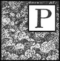

MUSIM DINGIN MASIH BERLANJUT

Peter tiba tepat waktu di sekolah keesokan harinya. Dia membawa bekal makan siangnya di dalam tas, karena semua anak yang datang dari jauh makan di sekolah, sementara yang lain pulang. Di malam hari, seperti biasa Peter mengunjungi Heidi.
Begitu dia membuka pintu, wanita itu berlari menghampirinya sambil berkata: "Peter, aku harus memberitahumu sesuatu."
"Katakan saja," jawabnya.
"Kamu harus belajar membaca sekarang," kata anak itu.
"Saya sudah melakukannya."
"Ya, ya, Peter, tapi aku tidak bermaksud seperti itu," lanjut Heidi dengan antusias; "kamu harus belajar agar kamu benar-benar tahu caranya nanti."
"Tidak ada yang percaya padamu lagi tentang itu, dan aku juga tidak akan percaya," kata Heidi dengan tegas. "Saat aku di Frankfurt, nenekku bilang itu tidak benar dan aku tidak seharusnya mempercayaimu."
Keheranan Peter sangat besar.
"Aku akan mengajarimu, karena aku tahu caranya; setelah kamu menguasainya, kamu harus membacakan satu atau dua lagu untuk nenek setiap hari."
"Aku tidak mau!" gerutu bocah itu.
Penolakan keras kepala itu membuat Heidi sangat marah. Dengan mata menyala-nyala , ia berdiri di depan anak laki-laki itu dan berkata: "Akan kukatakan apa yang akan terjadi, jika kau tidak mau belajar. Ibumu sering berkata bahwa ia akan mengirimmu ke Frankfurt. Clara menunjukkan kepadaku sekolah anak laki-laki yang mengerikan dan besar di sana, tempat kau harus bersekolah. Kau harus tinggal di sana sampai kau dewasa, Peter! Jangan berpikir bahwa hanya ada satu guru di sana, dan sebaik guru yang kita miliki di sini. Tidak, sungguh! Ada banyak sekali guru, dan ketika mereka berjalan-jalan, mereka mengenakan topi hitam tinggi di kepala mereka. Aku sendiri melihat mereka, ketika aku sedang berkendara!"
Rasa dingin menjalari punggung Peter.
"Ya, kamu harus pergi ke sana, dan ketika mereka tahu bahwa kamu tidak bisa membaca atau bahkan mengeja, mereka akan menertawakanmu!"
"Aku akan melakukannya," kata Peter, setengah marah dan setengah takut.
"Oh, aku senang sekali. Ayo kita mulai sekarang juga!" kata Heidi gembira, sambil menarik Peter ke meja. Di antara barang-barang yang dikirim Clara, Heidi menemukan sebuah buku kecil berisi huruf A, B , C dan beberapa sajak. Dia memilih buku ini untuk pelajaran. Peter, yang harus mengeja sajak pertama, merasa sangat kesulitan, jadi Heidi berkata, "Aku akan membacakan untukmu, dan kemudian kamu akan bisa melakukannya dengan lebih baik. Dengarkan:
"Jika A, B, C Anda tidak tahu,
Anda harus menghadap dewan sekolah."
"Aku tidak mau pergi," kata Peter dengan keras kepala.
"Di mana?"
"Di hadapan pengadilan."
"Cepatlah pelajari ketiga huruf itu, nanti kamu tidak perlu lagi!"
Peter, memulai lagi, mengulangi ketiga huruf itu sampai Heidi berkata:
"Sekarang kamu sudah mengenal mereka."
Setelah mengamati hasil yang baik dari sajak pertama, dia mulai membaca lagi:
D, E, F kemudian harus Anda baca,
Atau waspadalah terhadap kemalangan!
Jika H, I , J, K dilupakan,
Kesulitan ada di depan mata.
Siapa yang tersandung karena huruf L dan M,
Harus melakukan penebusan dosa dan merasa rendah hati.
Akan ada masalah; jika kau tahu,
Anda akan cepat mempelajari N, O, P, Q.
Jika Anda masih berhenti di R, S, T,
Kamu akan segera menanggung akibatnya.
Heidi, berhenti sejenak, menatap Peter, yang begitu ketakutan oleh semua ancaman dan kengerian misterius itu sehingga ia duduk diam seperti tikus. Hati Heidi yang lembut tersentuh, dan ia berkata dengan menenangkan: "Jangan takut, Peter; jika kamu datang kepadaku setiap hari, kamu akan segera mempelajari semua huruf dan kemudian hal-hal itu tidak akan terjadi. Tapi datanglah setiap hari, bahkan saat turun salju. Janji!"
Peter melakukan hal itu, lalu pergi. Mentaati instruksi Heidi, ia datang setiap hari kepadanya untuk mengikuti pelajaran.
Terkadang kakek akan duduk di ruangan itu, menghisap pipanya; seringkali sudut-sudut mulutnya berkedut seolah-olah dia hampir tidak bisa menahan tawa.
Ia biasanya mengundang Peter untuk makan malam setelahnya, yang merupakan hadiah yang pantas bagi anak itu atas semua usahanya yang besar.
Demikianlah hari-hari berlalu. Selama waktu itu, Peter memang telah membuat beberapa kemajuan, meskipun sajak-sajak masih membuatnya kesulitan.
Ketika mereka sampai di U, Heidi membaca:
Siapa pun yang mencampur U dan V,
Akan pergi ke tempat yang tidak ingin dia kunjungi!
dan selanjutnya,
Jika Anda tetap mengabaikan W,
Lihatlah batang besi di samping pintu.
Seringkali Peter menggerutu dan menolak tindakan-tindakan itu, tetapi meskipun demikian ia terus belajar, dan segera hanya tersisa tiga huruf lagi.
Beberapa hari berikutnya, sajak-sajak berikut, dengan ancaman-ancaman di dalamnya, membuat Peter semakin bersemangat.
Jika kamu lupa huruf X
Untukmu tidak akan disiapkan makan malam.
Jika Anda masih ragu dengan Y,
Karena malu, kau akan lari dan menangis.
Ketika Heidi membaca yang terakhir,
Dan dia yang membuat huruf Z-nya dengan bercak-bercak,
Harus melakukan perjalanan ke Hottentots,
Peter mencibir: "Tidak ada yang tahu di mana mereka berada!"
"Aku yakin kakek tahu," balas Heidi sambil melompat berdiri. "Tunggu sebentar, aku akan bertanya padanya. Dia sedang bersama pendeta," dan dengan itu dia membuka pintu.
"Tunggu!" teriak Peter dengan sangat panik, karena ia melihat dirinya sudah dipindahkan ke tempat orang-orang mengerikan itu. "Ada apa denganmu?" tanya Heidi, sambil berdiri diam.
"Tidak apa-apa, tapi tetaplah di sini. Aku akan belajar," isaknya. Tetapi Heidi, yang ingin mengetahui sesuatu tentang suku Hottentot, hanya bisa ditahan oleh jeritan memilukan dari Peter. Akhirnya mereka kembali tenang, dan sebelum waktunya pergi, Peter sudah mengetahui huruf terakhir, dan bahkan sudah mulai membaca suku kata. Sejak hari itu , kemajuannya lebih cepat.
Sudah tiga minggu sejak Heidi terakhir kali mengunjungi neneknya, karena salju telah turun lebat sejak saat itu. Suatu malam, Peter, saat pulang, berkata dengan penuh kemenangan:
"Aku bisa melakukannya!"
"Apa yang bisa kamu lakukan, Peter?" tanya ibunya dengan penuh harap.
"Membaca."
"Apa, mungkinkah? Apa nenek mendengarnya?" seru Brigida.
Sang nenek juga penasaran ingin mengetahui bagaimana hal ini bisa terjadi.
"Aku harus membacakan sebuah lagu sekarang; Heidi menyuruhku," lanjut Peter. Peter pun mulai membacakan lagu itu, membuat para wanita itu takjub. Setelah setiap bait, ibunya akan berseru, "Siapa yang menyangka!" sementara neneknya tetap diam.
Sehari kemudian, ketika tiba giliran Peter untuk membaca di sekolah, guru itu berkata:
"Peter, haruskah aku melewatimu lagi, seperti biasa? Atau kau ingin mencoba—aku tidak akan bilang membaca, tapi terbata-bata mengucapkan satu baris?"
Peter mulai membaca dan membaca tiga baris tanpa berhenti.
Dengan rasa takjub yang mendalam, sang guru meletakkan bukunya dan menatap anak laki-laki itu.
"Keajaiban apa yang telah terjadi padamu?" serunya. "Sudah lama aku berusaha mengajarimu dengan segenap kesabaranku, dan kau bahkan tidak mampu memahami huruf-huruf, tetapi sekarang setelah aku menganggapmu tidak punya harapan, kau tidak hanya belajar mengeja, tetapi bahkan membaca. Bagaimana ini bisa terjadi, Peter?"
"Itu Heidi," jawab anak laki-laki itu.
Dengan sangat takjub, guru itu memandang gadis kecil itu. Kemudian pria baik hati itu melanjutkan:
"Ibu telah melihat perubahan besar pada dirimu, Peter. Dulu kau sering absen dari sekolah, kadang lebih dari seminggu, dan akhir-akhir ini kau bahkan tidak pernah absen sehari pun. Siapa yang menyebabkan perubahan ini?"
"Paman."
Setiap malam, sekembalinya ke rumah, Peter membacakan satu lagu untuk neneknya, tetapi tidak pernah lebih dari itu. Menanggapi pujian Brigida yang sering disampaikan, wanita tua itu pernah menjawab: "Aku senang dia telah belajar sesuatu, tetapi meskipun demikian aku merindukan datangnya musim semi. Kemudian Heidi bisa mengunjungiku, karena ketika dia membaca, bait-baitnya terdengar sangat berbeda. Aku tidak selalu bisa mengikuti Peter, dan lagu-lagu itu tidak lagi menggugahku seperti ketika Heidi menyanyikannya!"
Dan tidak mengherankan! Karena Petrus seringkali menghilangkan kata-kata yang panjang dan sulit,—apa bedanya tiga atau empat kata! Jadi terkadang hampir tidak ada kata benda yang tersisa dalam himne yang dibacakan Petrus.
XX Daftar Isi
BERITA DARI TEMAN-TEMAN YANG JAUH
Hari telah tiba. Sinar matahari yang hangat menyinari seluruh Pegunungan Alpen dengan cahaya yang gemilang, dan setelah mencairkan salju terakhir, telah membawa bunga-bunga musim semi pertama ke permukaan. Angin musim semi yang riang bertiup, mengeringkan tempat-tempat lembap di bawah naungan. Tinggi di langit biru, elang melayang dengan tenang.
Heidi dan kakeknya telah kembali ke Pegunungan Alpen. Anak itu sangat senang bisa pulang lagi sehingga ia melompat-lompat di antara benda-benda kesayangannya. Di sini ia menemukan tunas musim semi yang baru, dan di sana ia mengamati nyamuk dan kumbang kecil yang riang yang berkerumun di bawah sinar matahari.
Kakek itu sibuk di bengkel kecilnya, dan terdengar suara palu dan gergaji. Heidi harus pergi melihat apa yang sedang dibuat kakek. Di depan pintu berdiri sebuah kursi baru yang rapi, sementara lelaki tua itu sibuk membuat kursi kedua.
"Oh, aku tahu untuk apa ini," kata Heidi riang. "Kau membuatnya untuk Clara dan nenek. Oh, tapi kita butuh yang ketiga—atau menurutmu Nona Rottenmeier mungkin tidak akan datang?"
"Aku benar-benar tidak tahu," kata kakek: "tapi lebih aman jika kita menyediakan kursi untuknya, jika dia datang."
Heidi, sambil berpikir memandang kursi-kursi tanpa sandaran itu, berkomentar: "Kakek, kurasa dia tidak akan mau duduk di kursi-kursi itu."
"Kalau begitu, kita harus mempersilakan dia duduk di sofa hijau yang indah itu," jawab lelaki tua itu dengan tenang.
Saat Heidi masih bertanya-tanya apa maksud kakeknya, Peter tiba sambil bersiul dan memanggil. Seperti biasa, Heidi segera dikelilingi oleh kambing-kambing, yang juga tampak senang kembali ke Alp. Peter, dengan marah mendorong kambing-kambing itu ke samping, berjalan menghampiri Heidi, dan menyelipkan sebuah surat ke tangannya.
"Apakah kau menerima surat untukku di padang rumput?" tanya Heidi dengan heran.
"TIDAK."
"Dari mana asalnya?"
"Dari tas saya."
Surat itu telah diberikan kepada Peter pada malam sebelumnya; karena memasukkannya ke dalam tas bekalnya, anak laki-laki itu lupa meletakkannya di sana sampai ia membuka tasnya untuk makan malam. Heidi segera mengenali tulisan tangan Clara, dan berlari menghampiri kakeknya, berseru: "Ada surat dari Clara. Apakah kakek tidak ingin aku membacanya untuk kakek?"
Heidi segera membacakan kepada kedua pendengarnya, sebagai berikut:—
tersayang :—
Kami semua sudah berkemas dan akan berangkat dalam dua atau tiga hari. Papa juga akan pergi, tetapi tidak bersama kami, karena ia harus pergi ke Paris terlebih dahulu. Dokter yang baik hati mengunjungi kami setiap hari, dan begitu ia membuka pintu, ia langsung berseru, 'Ayo ke Alpen!' karena ia tak sabar menunggu kami pergi. Seandainya kau tahu betapa senangnya ia bersamamu musim gugur lalu! Ia datang hampir setiap hari musim dingin ini untuk menceritakan semua tentangmu, kakek, pegunungan, dan bunga-bunga yang dilihatnya. Ia berkata bahwa udara di sana sangat tenang dan segar, jauh dari kota dan jalanan, sehingga semua orang pasti akan sembuh di sana. Ia sendiri jauh lebih baik sejak kunjungannya, dan tampak lebih muda dan lebih bahagia. Oh, betapa aku menantikan semuanya! Saran dokter adalah, aku akan pergi ke Ragatz terlebih dahulu selama sekitar enam minggu, lalu aku bisa tinggal di desa, dan dari sana aku akan datang menemuimu setiap hari yang cerah. Nenek, yang akan ikut denganku, juga menantikan perjalanan ini. Tapi bayangkan saja, Nona Rottenmeier tidak ingin pergi. Saat neneknya membujuknya, dia selalu menolak dengan sopan. Kurasa Sebastian pasti telah memberikan gambaran yang mengerikan tentang bebatuan tinggi dan jurang yang menakutkan itu, sehingga dia takut. Kurasa dia mengatakan kepadanya bahwa tempat itu tidak aman bagi siapa pun, dan hanya kambing yang bisa mendaki ketinggian yang mengerikan itu. Dulu dia sangat ingin pergi ke Swiss, tetapi sekarang baik Tinette maupun dia tidak ingin mengambil risiko. Aku sudah tidak sabar untuk bertemu denganmu lagi!
Selamat tinggal, Heidi tersayang, dengan banyak cinta dari nenek,
Aku adalah sahabat sejatimu,
Clara.
Ketika Petrus mendengar ini, ia mengayunkan tongkatnya ke kanan dan ke kiri. Dengan penuh amarah menggiring kambing-kambing di depannya, ia berlari menuruni bukit.
Keesokan harinya, Heidi mengunjungi neneknya karena ia harus menyampaikan kabar baik itu. Duduk tegak di pojoknya, wanita tua itu seperti biasa sedang memintal benang. Wajahnya tampak sedih, karena Peter telah mengumumkan kedatangan teman-teman Heidi dalam waktu dekat, dan ia takut akan akibatnya.
Setelah mencurahkan isi hatinya, Heidi menatap wanita tua itu. "Ada apa, nenek?" tanya anak itu. "Apakah nenek tidak senang?"
"Oh ya, Heidi, aku senang, karena kamu bahagia."
"Tapi, nenek, nenek tampak sangat cemas. Apakah nenek masih berpikir Nona Rottenmeier akan datang?"
"Oh tidak, bukan apa-apa. Ulurkan tanganmu, karena aku ingin memastikan kau masih di sini. Kurasa ini akan lebih baik, meskipun aku tidak akan hidup sampai hari itu tiba!"
"Oh, kalau begitu aku tidak akan peduli dengan hal ini," kata anak itu.
Sang nenek hampir tidak tidur sepanjang malam karena memikirkan kedatangan Clara. Akankah mereka mengambil Heidi darinya, sekarang setelah dia sehat dan kuat? Tetapi demi anak itu , dia memutuskan untuk berani.
"Heidi," katanya, "tolong bacakan untukku lagu yang dimulai dengan 'Tuhan akan mengurusnya.'"
Heidi segera melakukan apa yang diperintahkan; dia sudah hafal hampir semua himne favorit neneknya dan selalu menemukannya dengan cepat.
"Itu bermanfaat bagiku, Nak," kata wanita tua itu. Ekspresi wajahnya tampak lebih bahagia dan tidak terlalu sedih. "Tolong bacalah beberapa kali, Nak," pintanya.
Maka malam pun tiba, dan ketika Heidi berjalan pulang, satu demi satu bintang berkelap-kelip muncul di langit. Heidi berhenti setiap beberapa menit, memandang ke cakrawala dengan takjub. Ketika ia sampai di rumah, kakeknya juga sedang memandang bintang- bintang, bergumam pada dirinya sendiri: "Bulan yang luar biasa !— satu hari lebih cerah dari hari lainnya. Tanaman herbal akan tumbuh subur dan kuat tahun ini."
Bulan berbunga telah berlalu, dan Juni, dengan hari-hari yang sangat panjang, telah tiba. Banyak sekali bunga bermekaran di mana-mana, memenuhi udara dengan aroma harum. Bulan itu hampir berakhir, ketika suatu pagi Heidi berlari keluar dari gubuk, tempat dia telah menyelesaikan tugasnya. Tiba-tiba dia menjerit begitu keras sehingga kakeknya buru-buru keluar untuk melihat apa yang terjadi.
"Kakek! Kemari! Lihat, lihat!"
Sebuah prosesi aneh sedang menyelesaikan perjalanan menuju Alm. Pertama-tama, berbaris dua orang pria, membawa tandu terbuka dengan seorang gadis muda di dalamnya, terbungkus banyak selendang. Kemudian datang seorang wanita anggun menunggang kuda, yang, sambil berbicara dengan seorang pemandu muda di sampingnya, melihat ke kanan dan ke kiri dengan penuh harap. Kemudian sebuah kursi roda kosong, yang dibawa oleh seorang pemuda, diikuti oleh seorang porter yang membawa begitu banyak selimut, selendang, dan bulu yang ditumpuk di keranjangnya sehingga menjulang tinggi di atas kepalanya.
"Mereka datang! Mereka datang!" seru Heidi dengan gembira, dan tak lama kemudian rombongan itu tiba di puncak. Betapa bahagianya anak-anak itu bertemu kembali. Ketika nenek turun dari kudanya, ia dengan lembut menyapa Heidi terlebih dahulu, lalu menoleh ke paman yang telah mendekati rombongan. Keduanya bertemu seperti dua teman lama, mereka telah banyak mendengar tentang satu sama lain.
Setelah percakapan pertama terucap, nenek itu berseru: "Paman tersayang, betapa indahnya tempat tinggalmu. Siapa yang menyangka! Raja-raja pun akan iri padamu! Oh, betapa cantiknya Heidi-ku, seperti mawar kecil!" lanjutnya, sambil menarik anak itu mendekat dan menepuk pipinya. "Betapa indahnya semuanya! Clara, bagaimana menurutmu tentang semua ini?"
Clara, sambil memandang sekelilingnya dengan penuh kekaguman, berseru: "Oh, betapa indahnya, betapa menakjubkannya! Aku tak pernah membayangkan tempat ini bisa seindah ini. Oh nenek, aku berharap bisa tinggal di sini!"
sang paman sibuk mengambil kursi roda untuk Clara. Kemudian, menghampiri gadis itu, ia dengan lembut mengangkatnya ke tempat duduknya. Ia menutupi lututnya dengan selimut dan membalut kakinya dengan hangat. Seolah-olah kakek itu tidak melakukan hal lain sepanjang hidupnya selain merawat orang lumpuh.
"Paman tersayang," kata nenek itu dengan terkejut, "tolong beri tahu aku di mana Paman belajar itu, karena aku akan segera mengirim semua perawat yang kukenal ke sini."
Sang paman tersenyum tipis sambil menjawab: "Itu lebih berasal dari kepedulian daripada pembelajaran."
Wajahnya menjadi sedih. Kenangan masa lalu terlintas di benaknya. Karena itulah cara dia merawat kaptennya yang malang dan terluka, yang ditemukannya di Sisilia setelah pertempuran sengit. Hanya dia seorang yang diizinkan merawatnya hingga kematiannya, dan sekarang dia akan merawat Clara yang malang dan pincang dengan sama baiknya.
Setelah Clara lama menatap langit tanpa awan dan semua tebing berbatu, dia berkata dengan penuh kerinduan: "Aku berharap bisa berjalan mengelilingi gubuk menuju pohon-pohon cemara. Seandainya saja aku bisa melihat semua hal yang sering kau ceritakan padaku!"
Heidi mendorong sekuat tenaga, dan lihatlah! kursi itu berguling dengan mudah di atas rumput kering. Ketika mereka sampai di hutan kecil itu, Clara takjub melihat pepohonan indah yang pasti telah berdiri di sana selama bertahun-tahun. Meskipun orang-orang telah berubah dan menghilang, mereka tetap sama, selalu memandang ke lembah.
Ketika mereka melewati kandang kambing yang kosong, Clara berkata dengan sedih: "Oh nenek, seandainya aku bisa menunggu Schwänli dan Bärli di sini ! Aku takut aku tidak akan bertemu Peter dan kambing-kambingnya, jika kita harus pergi secepat ini lagi."
"Anakku sayang, nikmatilah apa yang bisa kamu nikmati sekarang," kata nenek yang mengikuti di belakang.
"Oh, betapa indahnya bunga-bunga itu!" seru Clara lagi; "seluruh semak dipenuhi bunga merah yang cantik. Oh, seandainya aku bisa memetik beberapa bunga lonceng biru itu!"
Heidi, dengan segera mengumpulkan seikat besar bunga, meletakkannya di pangkuan Clara.
"Clara, ini sebenarnya tidak ada apa-apanya dibandingkan dengan banyaknya bunga di padang rumput. Kamu harus datang sekali dan melihatnya. Ada begitu banyak bunga sehingga tanah tampak keemasan karenanya. Jika kamu duduk di antara mereka, kamu akan merasa seolah-olah tidak akan pernah bisa bangun lagi, saking indahnya."
"Oh, nenek, menurutmu apakah aku bisa naik ke sana suatu hari nanti?" tanya Clara dengan kerinduan yang mendalam di matanya. "Seandainya aku bisa berjalan bersamamu, Heidi, dan memanjat ke mana-mana!"
"Aku akan mendorongmu!" kata Heidi untuk menghibur. Untuk menunjukkan betapa mudahnya, dia mendorong kursi itu dengan kecepatan sedemikian rupa sehingga kursi itu akan terguling menuruni gunung, jika kakeknya tidak menghentikannya pada saat terakhir.
Sekarang waktunya makan malam. Meja disiapkan di dekat bangku, dan tak lama kemudian semua orang duduk. Nenek begitu terpesona oleh pemandangan dan angin sepoi-sepoi yang menyegarkan pipinya sehingga ia berkata: "Tempat yang menakjubkan! Aku belum pernah melihat yang seperti ini ! Tapi apa yang kulihat?" lanjutnya. "Kurasa kau sedang makan potongan keju keduamu, Clara?"
"Oh nenek, rasanya lebih enak daripada semua makanan yang kita beli di Ragatz," jawab anak itu sambil lahap memakan hidangan gurih tersebut.
"Jangan berhenti, angin gunung kita akan membantu jika masakannya kurang sempurna!" kata lelaki tua itu dengan puas.
Selama makan, paman dan nenek segera terlibat dalam percakapan yang hidup. Mereka tampaknya sepakat dalam banyak hal, dan saling memahami seperti teman lama. Tak lama kemudian, nenek menoleh ke arah barat.
"Kita harus segera berangkat, Clara, karena matahari sudah mulai terbenam; pemandu kita akan segera datang."
Wajah Clara menjadi sedih, dan dia memohon: "Oh, kumohon izinkan kami tinggal di sini satu jam lagi. Kami bahkan belum melihat gubuk itu. Kuharap hari ini bisa dua kali lebih panjang."
Nenek mengabulkan keinginan Clara untuk masuk ke dalam. Ketika kursi roda ternyata terlalu lebar untuk pintu, paman dengan tenang mengangkat Clara dengan lengannya yang kuat dan membawanya masuk. Nenek dengan antusias melihat sekeliling, senang melihat semuanya begitu rapi. Kemudian, menaiki tangga kecil ke loteng jerami, ia menemukan tempat tidur Heidi. "Apakah itu tempat tidurmu, Heidi? Aromanya harum sekali! Pasti tempat yang sehat untuk tidur," katanya sambil melihat ke luar jendela. Kakek, bersama Clara, juga sedang naik, diikuti oleh Heidi.
Clara benar-benar terpesona. "Tempat tidur yang indah sekali! Oh, Heidi, kau bisa melihat langsung ke langit dari tempat tidurmu. Baunya harum sekali! Kau bisa mendengar deru pohon cemara di sini, kan? Oh, aku belum pernah melihat kamar tidur yang lebih menyenangkan!"
Sang paman, sambil memandang wanita tua itu, berkata: "Aku punya ide bahwa akan memberi Clara kekuatan baru jika dia tinggal di sini bersama kita sebentar. Tentu saja, maksudku hanya jika kau tidak keberatan. Kau telah membawa begitu banyak selimut sehingga kita dapat dengan mudah membuat tempat tidur yang empuk untuk Clara di sini. Nyonya, kau dapat dengan mudah menyerahkan perawatannya kepadaku. Aku akan melakukannya dengan senang hati."
Anak-anak berteriak kegirangan, dan wajah nenek berseri-seri.
"Betapa baiknya Anda!" serunya. "Saya tadinya berpikir bahwa tinggal di sini akan memperkuat anak itu, tetapi kemudian saya memikirkan perhatian dan kesulitan yang akan Anda tanggung. Dan sekarang Anda menawarkan untuk melakukannya, seolah-olah itu bukan apa-apa. Bagaimana saya bisa cukup berterima kasih kepada Anda, paman?"
Setelah berjabat tangan berkali-kali, keduanya menyiapkan tempat tidur Clara, yang, berkat tindakan pencegahan wanita tua itu, segera menjadi sangat empuk sehingga jerami tidak dapat dirasakan sama sekali.
Sang paman telah membawa pasien barunya kembali ke kursi rodanya, dan di sana mereka mendapati Clara sedang duduk, dengan Heidi di sampingnya. Mereka dengan antusias membicarakan rencana mereka untuk beberapa minggu mendatang. Ketika diberi tahu bahwa Clara mungkin akan tinggal selama sebulan atau lebih, wajah mereka berseri-seri lebih dari sebelumnya.
Pemandu wisata, bersama kudanya, dan para pengangkut kursi pun muncul, tetapi dua orang terakhir tidak dibutuhkan lagi dan dapat disuruh pergi.
Ketika nenek bersiap untuk pergi, Clara memanggilnya dengan riang: "Oh nenek, sebentar lagi, karena nenek pasti akan sering datang mengunjungi kami."
Saat sang paman menuntun kuda menuruni lereng yang curam, nenek memberitahunya bahwa ia akan kembali ke Ragatz, karena Dörfli terlalu sepi baginya. Ia juga berjanji akan kembali dari waktu ke waktu.
Sebelum kakek kembali, Peter berlari ke gubuk bersama semua kambingnya. Melihat Heidi, mereka bergegas menghampirinya, dan begitulah Clara berkenalan dengan Schwänli dan Bärli serta semua yang lain.
Namun, Peter menjauh, hanya melirik kedua gadis itu dengan marah. Ketika mereka mengucapkan selamat malam kepadanya, dia hanya lari sambil memukul-mukul udara dengan tongkatnya.
Hari yang penuh sukacita telah berakhir. Kedua anak itu sudah berbaring di tempat tidur mereka.
"Oh, Heidi!" seru Clara, "Aku bisa melihat begitu banyak bintang berkilauan, dan aku merasa seolah-olah kita sedang menaiki kereta tinggi langsung menuju langit."
"Ya, dan tahukah kamu mengapa bintang-bintang berkelap-kelip begitu riang?" tanya Heidi.
"Tidak, tapi ceritakan padaku."
"Karena mereka tahu bahwa Tuhan di surga menjaga kita manusia fana dan kita tidak perlu takut. Lihat, mereka berkelap-kelip dan menunjukkan kepada kita bagaimana caranya bergembira juga. Tapi Clara, kita tidak boleh lupa berdoa kepada Tuhan dan meminta-Nya untuk memikirkan kita dan menjaga kita tetap aman."
Sambil duduk di tempat tidur, mereka kemudian mengucapkan doa malam. Begitu Heidi berbaring, ia langsung tertidur. Tetapi Clara belum bisa tidur, pemandangan bintang-bintang dari tempat tidurnya terlalu menakjubkan.
Sejujurnya, dia belum pernah melihat bintang-bintang itu sebelumnya, karena di Frankfurt semua tirai selalu tertutup jauh sebelum bintang-bintang muncul, dan di malam hari dia belum pernah keluar rumah. Dia hampir tidak bisa memejamkan mata, dan harus membukanya berulang kali untuk menyaksikan bintang-bintang yang berkelap-kelip dan berkilauan, sampai akhirnya matanya tertutup dan dia melihat dua bintang besar yang berkilauan dalam mimpinya.